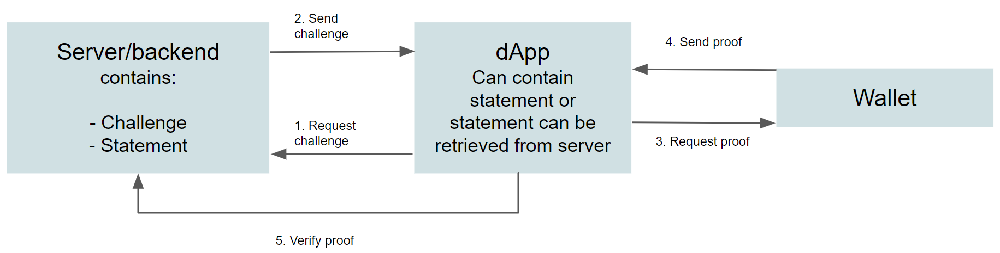

Create proofs#
At a glance
This guide explains how to build a verifier that requests zero-knowledge proofs from users’ wallets. You will need a dApp frontend and a backend service. After following this guide, you will be able to construct proof statements — including reveal, range, and membership proofs — and verify the resulting presentations against Concordium’s identity layer.
A verifier is a business or use-case that provides a service contingent on the holder providing information about themselves using verifiable credentials or account credentials they have. A verifier will typically consist of two components:
A dApp that interacts with the wallet and requests a verifiable presentation from the user.
A backend that will verify the provided presentations, and provide the required service if successful.
The Concordium Wallet for Web allows verifiers to request verifiable presentations using dApps or services that the user meets some requirement, such as proof the user is over a certain age, or resides in a specific set of countries or area. The wallet owner chooses whether to prove these attributes to the dApp or service. The dApp or service constructs a list of statements to request a corresponding list of zero-knowledge proofs of the attribute(s) necessary without revealing anything beyond the truth of the statement. Presentations contain zero-knowledge proofs.
The dApp or service can also request that attributes are revealed. The wallet owner can choose whether they want to reveal these attributes to the dApp or service. The verifiable credentials themselves never leave the holder’s wallet, only the information requested by the verifier does.
The verification of presentations consists of two parts.
The cryptographic verification of zero-knowledge proofs, and checks that the verifiable credential is valid, which involves checks in smart contracts.
The checking whether the properties attested to are the ones required. This is the custom business logic of the verifier.
Note that the presentation can combine requirements for account credentials and verifiable credentials.
The diagram below shows the interaction between the Rust server/backend, the dApp, and the wallet.

You have a server or backend that contains the challenge and the statement.
The dApp requests the challenge from the server/backend.
The server/backend returns the challenge to the dApp. The dApp uses it when sending the statements. Your dApp can request the statement from the server or it can contain the statement. Note however that it is the backend that ultimately checks proofs, and so it must be aware of the statement.
The dApp sends a request for proof for the given challenge and statement to the wallet.
The wallet sends proof back to the dApp (if accepted by the user).
The dApp sends the proof to the backend which verifies it with respect to the challenge it has issued.
General rules#
For the dApp or service developer there are some general rules about proofs that you have to follow.
There is no limit to the amount of attributes that can be revealed.
An attribute can only be used in one proof at a time.
The identity provider issued attributes that can be revealed from account credentials are:
First name
Last name
Sex
Date of birth
Country of residence
Country of nationality
ID document type
ID document number
ID document issuer
ID valid from
ID valid to
National ID number
Tax ID number
You can also build statements that include proofs for attributes in verifiable credentials. In this case, there is not a fixed list of attributes; it depends on the issuer’s needs.
You can find more information about building proof statements in the Concordium node SDK js repository.
Asking a user to reveal attributes#
You can construct a reveal statement in which the wallet owner must consent to reveal one or more specific attributes.
In the example below, the wallet owner’s country of residence is requested to be revealed.
[
{
"type": "RevealAttribute",
"attributeTag": "countryOfResidence"
}
]
Unless it is absolutely critical to know a specific attribute, it is good policy to use the proof types below instead to determine a user’s eligibility for your app instead of requesting that they reveal information to you.
Range proofs#
Range proofs allow you to present a range of values to the user’s wallet to determine whether the user meets the required attribute. For example, you might want to know if a user over 18 years of age but under 30 years of age. You can present this as a range proof to be verified by the wallet.
Relevant attributes for range proofs are:
Date of birth
ID valid to
ID valid from
Note
Age proofs are a common abstraction on date of birth proofs. There are age helper functions in the SDK to aid in constructing these.
Structure a range proof#
In the example below, you see a range proof constructed to check that wallet owner is between 25 and 65 years old (as of 2022-12-12).
{
"challenge": "a54bc4116655d247fa625d98f768d4d81e55ffe26ac6bab259bad5895d49ae00",
"statement": [
{
"type": "AttributeInRange",
"attributeTag": "dob",
"lower": "19571212",
"upper": "19971212"
}
]
}
Membership proofs#
Membership proofs allow you to present a list of values to the user’s wallet to determine whether the user has one of the required attributes in the list. For example, you might want to know if a user is a resident of the EU. You can present this as a membership proof to be verified by the wallet.
Relevant attributes for membership proofs are:
Country of residence
Country of nationality
Identity document type
Identity document issuer
Note
Country of nationality has helper functions in the SDK to aid in constructing statements.
Structure a membership proof#
In the example below, the proof checks that the wallet owner is a citizen of one of the Nordic countries (Finland, Denmark, Sweden, Norway, or Iceland).
{
"challenge": "6c7d69b121d4ce829392d9f2b16395708a458f6183caa20e9074e7283e377418",
"statement": [
{
"type": "AttributeInSet",
"attributeTag": "nationality",
"set": [
"DK",
"FI",
"IS",
"NO",
"SE"
]
}
]
}
Membership proofs can also prove that a user does NOT have an attribute or attributes in a set, in other words a non-membership proof. For example, if you need to know that a user is not a resident of a country that is subject to trade sanctions to use your service, you might request a proof that the wallet owner does not reside in the relevant countries.
For example, the statement below asks if the wallet owner is a citizen of China or North Korea.
{
"challenge": "4de5faf3d68c09e3e76fd8d82ce251c1ff0e49fdcc2661a2f875db35eba02f4d",
"statement": [
{
"type": "AttributeNotInSet",
"attributeTag": "nationality",
"set": [
"CN",
"KP"
]
}
]
}
Note
Country codes to use for residence and nationality proofs are the ISO-3166-1 alpha-2 codes.
Tool to verify credentials#
Concordium has developed a verifier tool which is a self-contained service that handles the retrieval of credentials from the chain, and the cryptographic verification of presentations. The tool is generic and the API exposed is minimal. The verifier has a single POST endpoint and is meant to be used by another service, such as a dApp.
The response to the request will be status code 200 together with a JSON body that contains the request (i.e., challenge and statement for which the presentation is valid) together with the timestamp and block in which the verification took place. In case of an invalid request the HTTP status code will be in the 4** range, either 404 if credentials cannot be found, or 400 for invalid proofs or otherwise malformed requests.
You can choose whether you want to run your own verifier tool or you want to use the hosted Concordium verifier endpoints:
Mainnet: https://web3id-verifier.mainnet.concordium.software/v0/verify
Testnet: https://web3id-verifier.testnet.concordium.com/v0/verify
An example request sent to the endpoint is as follows:
curl -POST "https://web3id-verifier.testnet.concordium.com/v0/verify" -H "Content-Type: application/json" --data '{"presentationContext":"759426830fd65e1ad30585fb8dc14cbf9f643a825e28196b896ee36c6f85fe33","proof":{"created":"2025-04-07T07:57:46.644Z","proofValue":[],"type":"ConcordiumWeakLinkingProofV1"},"type":"VerifiablePresentation","verifiableCredential":[{"credentialSubject":{"id":"did:ccd:testnet:cred:b1f1b7bb1b57af17cfcdfa853da3401456e985d8f9dc42178007aa2eef6a89f0b0bb467673fa0baff2d82c98fca6c5ef","proof":{"created":"2025-04-07T07:57:46.644Z","proofValue":[{"attribute":"John","proof":"7f4c5f378aef48e636979ca20adaa8b4d54c4518102c4d5991e1d794a4e9ba3f59855b40ce1175be7d23c09c056064c92dab7cb140508735b8922f5eaac2cb1a","type":"RevealAttribute"}],"type":"ConcordiumZKProofV3"},"statement":[{"attributeTag":"firstName","type":"RevealAttribute"}]},"issuer":"did:ccd:testnet:idp:0","type":["VerifiableCredential","ConcordiumVerifiableCredential"]}]}' -v
Note that if you use the hosted verifier then you trust Concordium when verifying proofs.
If you do not wish to use the Concordium hosted verifier, you can can either build your own following instructions in readme file or use the published Docker image.
Concordium Proof Explorer#
If you want to familiarize yourself with how proofs work and can be constructed, you can use the Concordium Proof Explorer to create proofs and send them to a Concordium Wallet for Web to see how they interact with account credentials and verifiable credentials. The Concordium Proof Explorer works on Testnet. You can use the Web3Id Issuer Frontend to create verifiable credential to test with the proof explorer.
Example dApp#
Concordium provides the following example demo app and repository for inspriation:
The app is a gallery that requires the user to be over a certain minimum age and an EU resident to view some content.

{kind=link}